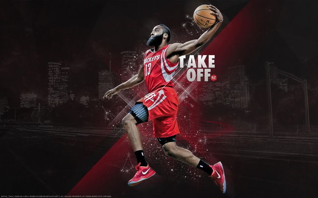

Houston Rockets
The Heart of a Champion

James Harden is the heart and soul of the Rockets
Here is a timeline of the Rockets Franchise
- 1967 - The team was established as the San Diego Rockets
- 1971 - The Rockets move to Houston
- 1976 - The Rockets have their first winning season
- 1981 - The Rockets make it to their first NBA Finals where they were defeated by the Boston Celtics
- 1984 - The Rockets drafted center Hakeem "The Dream" Olajuwon
- 1986 - The Rockets make their second NBA Finals appearance and were again defeated by the Boston Celtics
- 1987 - Rudy Tomjanovich takes over as head coach of the Rockets
- 1994 - The Rockets win their first NBA Championship Title against the New York Knicks
- 1995 - The Rockets continue their success and the following season and go on to win their second NBA Championship Title agains the Orlando Magic
- 1996 - The Rockets aquire Charles Barkley
- 2002 - The Rockets draft Yao Ming from China
- 2004 - The Rockets aquire Tracy McGrady from the Orlando Magic
- 2012 - The Rockets aquire James Harden from the Oklahoma City Thunder
- 2017 - The Rockets aquire Chris Paul from the Los Angeles Clippers
"We had nonbelievers all along the way, and I have one thing to say to those nonbelievers: Don't ever underestimate the heart of a champion!"
-- Rudy Tomjanovich, Head Coach of the Houston Rockets 1992-2003